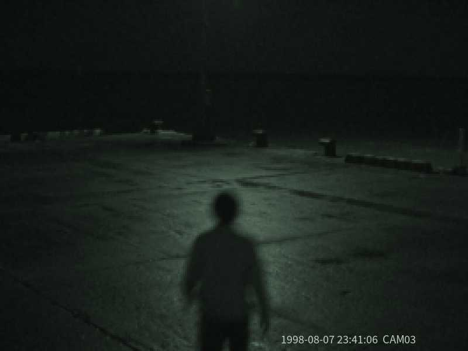
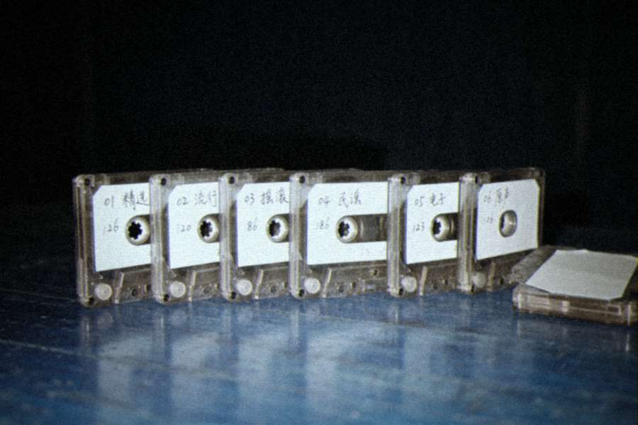

1998 年回瀾法會．側錄帶．封存
| 時間 | 1998/08/07 23:41 |
| 地點 | 汐平縣澪港鎮海尾路七號後方堤防 |
| 記錄 | CAM03／側錄帶 A-1998-07 |
| 人員 | 入水七人．六具遺體．失蹤一人 |
| 備註 | 第七人的名字沒有登記 |

CAM03 1998-08-07 23:41:06 （畫面已劣化）

法會前點交的七卷帶子．第七卷標籤空白
0:00 / 0:26
※ 帶子後段是水聲，長約 40 秒。轉檔時已截掉。
※ 第七個聲音不在名冊上。